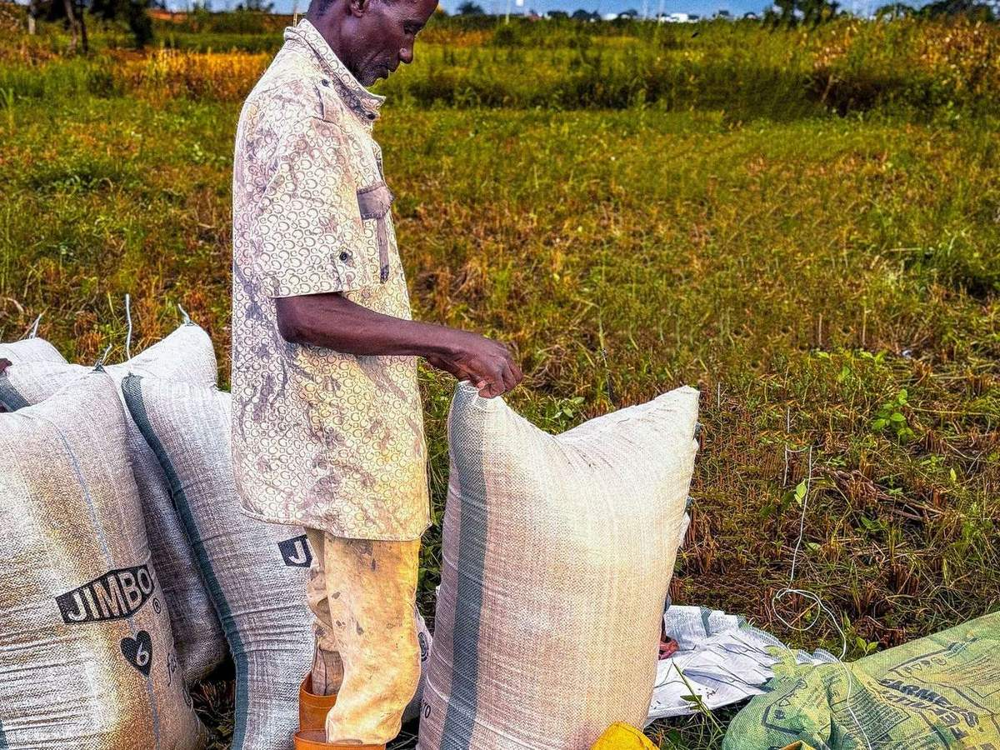
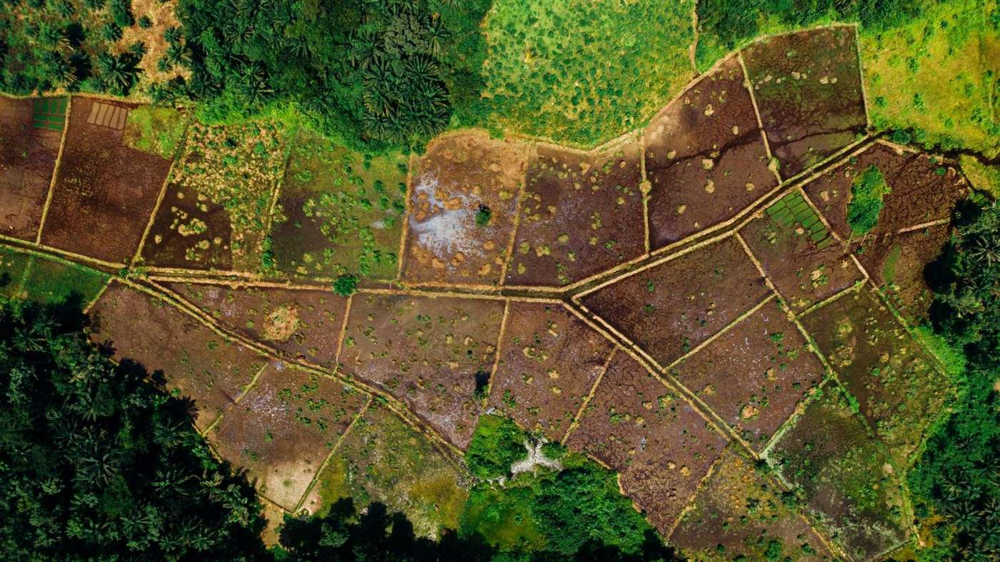

Du champ au tableau de bord, la technologie au service de l'Afrique qui produit.
Kaada Group conçoit les logiciels, les applications, les plateformes cloud et les systèmes de données dont les organisations africaines ont besoin. Notre terrain de prédilection est l'agriculture : coopératives, exportateurs, ONG et institutions qui doivent savoir ce qui se passe sur chaque parcelle.
Un seul partenaire, de l'idée à la mise en production.
Nous couvrons toute la chaîne numérique. Vous n'avez pas à coordonner plusieurs prestataires : une équipe KDG suit votre projet du cahier des charges jusqu'à la maintenance.
Développement logiciel
Applications métier sur mesure : gestion des achats, ERP sectoriels, plateformes de paiement et outils internes adaptés à vos processus.
Web et mobile
Sites, portails et applications Android et iOS pensés pour les réseaux mobiles africains : légers, rapides et utilisables hors connexion.
Cloud et infrastructure
Hébergement, migration, déploiement continu et supervision. Une infrastructure qui tient la charge pendant les pics de campagne.
Data, IA et tableaux de bord
Pipelines de données, modèles prédictifs et indicateurs que vos équipes, vos acheteurs et vos bailleurs comprennent.
Collecte de données terrain
Enquêtes, recensements et cartographie GPS menés par nos agents ou les vôtres, avec contrôle qualité à chaque étape.
Qualité et cybersécurité
Tests fonctionnels, de charge et de sécurité avant chaque mise en production. Les problèmes sont trouvés par nous, pas par vos utilisateurs.
Nous connaissons le terrain avant d'écrire la première ligne de code.
Traçabilité, conformité au règlement européen contre la déforestation (EUDR), suivi des producteurs, protection de l'enfance : nos solutions répondent aux exigences réelles des filières agricoles africaines.
- Étape 1
Collecte hors-ligne
L'agent saisit les données et trace la parcelle, même sans réseau.
- Étape 2
Synchronisation
Les données remontent dès que le téléphone capte.
- Étape 3
Contrôle qualité
Doublons, polygones incohérents et valeurs aberrantes sont signalés.
- Étape 4
Analyse
Tableaux de bord par coopérative, zone et campagne.
- Étape 5
Preuve
Rapports prêts pour les acheteurs, certificateurs et bailleurs.
Cartographie des parcelles
Relevés GPS, polygonage et vérification des superficies. Chaque plantation est géolocalisée et rattachée à son producteur.
Traçabilité de la chaîne d'approvisionnement
Du producteur à la coopérative, puis à l'exportateur. Chaque sac est rattaché à son origine.
Conformité EUDR et certifications
Analyse du risque de déforestation, dossiers de diligence raisonnée et données prêtes pour les audits.
Recensement et enquêtes producteurs
Profils des ménages, enquêtes socio-économiques et études de référence menées avec des agents formés.
Protection de l'enfance et droits humains
Outils numériques pour les systèmes de suivi et de remédiation du travail des enfants (SSRTE / CLMRS).
Gestion des coopératives
Achats, pesées, primes et paiements par mobile money. Une gestion claire qui renforce la confiance des producteurs.
années d'expérience dans les programmes de cacao durable en Côte d'Ivoire et en Afrique de l'Ouest.Notre équipe a piloté des projets de traçabilité, de durabilité et de protection de l'enfance aux côtés d'exportateurs, de négociants et d'ONG internationales.
La traçabilité et la conformité EUDR, prêtes à l'emploi.
Registre et polygones contrôlés, achats et lots tracés à la parcelle, analyse de déforestation, dossiers de diligence raisonnée et suivi du travail des enfants : Sankora réunit tout ce que la filière exige, dans une seule plateforme.
- 01RegistreProducteurs, parcelles et polygones dans un seul référentiel, contrôlé automatiquement.
- 02FluxAchats, paiements, lots, expéditions et réceptions, rattachés à leurs parcelles d'origine.
- 03Conformité RDUEAnalyse de déforestation, évaluation des risques et dossier de diligence raisonnée.
- 04PilotageIndicateurs de campagne, alertes automatiques et assistant pour vos synthèses.
- 05Travail des enfantsSystème de suivi et de remédiation (SSRTE / CLMRS) avec une application mobile hors ligne.
Des projets concrets, des résultats mesurables.
Quelques exemples de ce que nous construisons avec nos clients, du terrain jusqu'au tableau de bord de la direction.

Plateforme d'achat et de traçabilité du soja
Application mobile d'achat hors-ligne, pesées, paiements mobile money et tableau de bord en temps réel.
Lire l'étude de cas
Cartographie et conformité EUDR d'une base d'approvisionnement
Polygonage des parcelles, analyse satellite du risque de déforestation et dossier de diligence raisonnée.
Lire l'étude de casStratégie digitale et pilotage des missions terrain
Diagnostic des processus, feuille de route numérique et outils de suivi de l'activité commerciale.
Lire l'étude de casLa même rigueur, dans tous les secteurs.
L'agriculture est notre spécialité, pas notre limite. Les méthodes que nous avons rodées sur le terrain servent aussi d'autres organisations.
ONG et développement
Suivi-évaluation, collecte de données de projet et tableaux de bord d'impact pour les bailleurs.
Institutions publiques
Recensements, registres numériques et plateformes de services aux citoyens.
Finance et microfinance
Crédit, scoring, mobile money et outils de gestion des agences.
Éducation et santé
Évaluation des apprentissages, suivi des programmes et données sanitaires.
Commerce et distribution
Forces commerciales terrain, stocks, ventes et réseaux de distributeurs.
Agroalimentaire et industrie
Approvisionnement, qualité, production et traçabilité en usine.
Ce que nos clients obtiennent en travaillant avec nous.
Nous apportons aux organisations africaines, quelle que soit leur taille, un niveau d'expertise jusqu'ici réservé aux grandes entreprises.
Nous comprenons vos besoins
Nous passons du temps avec vos équipes, y compris sur le terrain, avant de proposer une solution. Le cahier des charges part de votre réalité.
Les bonnes personnes
Développeurs, architectes, analystes de données et superviseurs de terrain : chaque projet est confié aux profils qui maîtrisent le sujet.
Transparence et visibilité
Points d'avancement réguliers, accès aux versions de test et indicateurs partagés. Vous savez à tout moment où en est votre projet.
Une solution complète
Logiciel, hébergement, collecte, analyse et formation des utilisateurs. Un seul interlocuteur pour l'ensemble.
Budget et délais respectés
Un périmètre clair, un calendrier découpé en étapes et un budget validé ensemble avant le démarrage.
Une communication directe
Vous échangez directement avec l'équipe qui travaille sur votre projet, en français ou en anglais, par téléphone ou WhatsApp.
Cinq étapes, du diagnostic à l'exploitation.
Chaque étape se termine par une validation avec vous. Rien n'avance sans votre accord.
- 01
Diagnostic
Atelier de cadrage, analyse de l'existant et des contraintes terrain.
Offert - 02
Conception
Architecture, maquettes interactives, plan de projet et budget validé.
1 à 3 semaines - 03
Développement
Sprints de deux semaines, démonstrations et tests continus.
Agile - 04
Déploiement
Mise en production, migration des données, formation des équipes.
Accompagné - 05
Exploitation
Supervision, maintenance, support local et évolutions.
Contrat de service
Parlons de votre projet.
Décrivez votre besoin en quelques lignes. Nous revenons vers vous sous 24 heures ouvrées pour organiser un premier échange, gratuit et sans engagement.